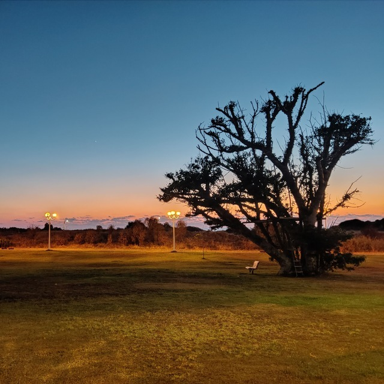
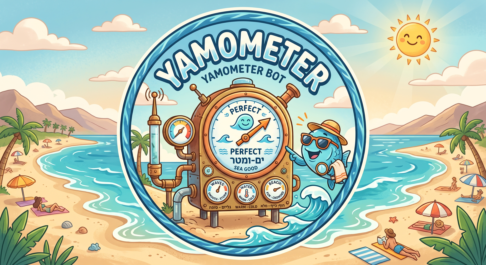
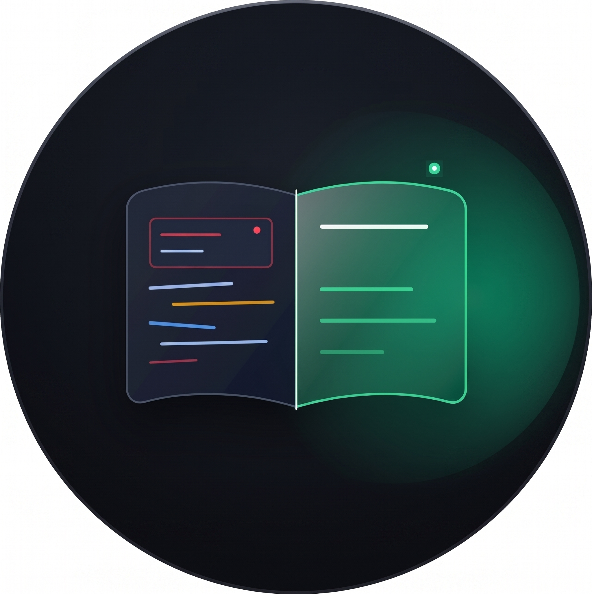
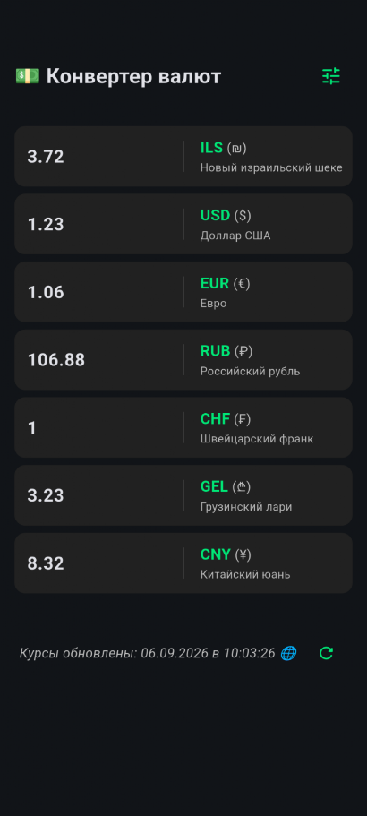
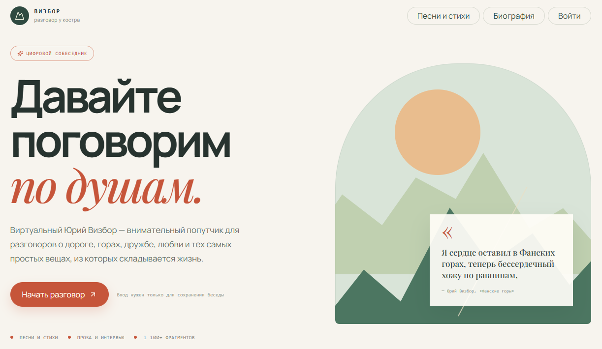
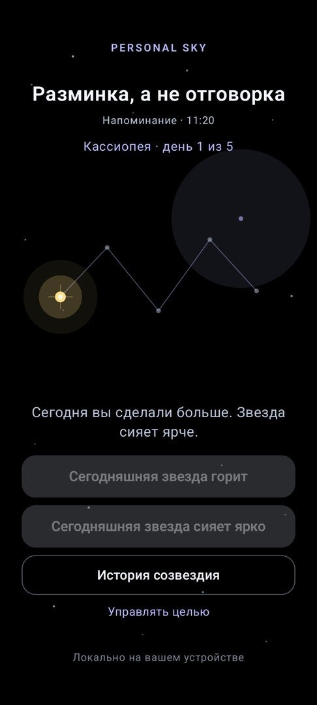

Карты созвездий
Кассиопея, Большая Медведица и Орион для коротких личных путей.
Самый первый телеграм-бот я написал для шахматистов.
Он превращает текст шахматной партии в формате PGN в видеофайл (при этом в отличие от других подобных умел показывать и варианты с анализом).
В настоящее время бот отключен.

Второй телеграм-бот — некоторое «гадание» на русской поэтической классике.
Вы даёте боту слово, он выдаёт в ответ фото с закатом (это мои фото) и стихи (это хорошие стихи, не мои :-)).
В настоящее время бот отключен.

Море сегодня ласковое или включило режим стиральной машины? 🌊 Yamometer мониторит пляжи по всему Израилю, чтобы спасти ваши планы на отдых:
Выбирайте свой город и ныряйте! 🏄♂️

utm_*, fbclid, si, igsh), оставляя компактный и аккуратный адрес первоисточника.
Первое мобильное приложение, которое я навайбкодил, — это конвертер валют. Мне нужно было на чем-то тренироваться, а платить за существующие не хотелось. Реклама в бесплатных тоже раздражала 🙂
Поэтому получилось простенько, но оно работает — и это было самое важное!

«Виртуальный Визбор» — диалоговый проект, бережно воссоздающий язык, интонации и эстетику Юрия Визбора.
Основа: модель обучена исключительно на текстах песен, прозе, расшифровках интервью и личных дневниках автора.
Главный принцип: боту категорически запрещено сочинять от себя или рассуждать на темы, чуждые миру Визбора. Он не имитирует живого человека, а говорит строго через призму подлинного наследия барда.
Для чего: душевный разговор о горах, дружбе, сомнениях и жизни, поиск любимых строк и погружение в творчество Юрия Иосифовича.
Телеграм-бот: https://t.me/vizbor_bot

Таков путь — превращай привычки в звёзды
Устали от трекеров, которые давят чувством вины и сгорающими сериями?
В приложении «Personal Sky» ни один шаг не пропадает. Выбирайте цель и длину спринта: каждый выполненный день зажигает звезду, складываясь в реальное созвездие на глубоком чёрном AMOLED-небосводе. А пропущенный день не ломает прогресс, оставляя мягкий след светящейся туманности.
Маленькие шаги складываются в свет. Таков путь.
Android-приложение
Трекер привычек, в котором маленькие действия складываются в личное созвездие — без обнуления пути из-за одного пропущенного дня.
Создайте небольшой путь на 5, 7 или 14 дней. Обычная отметка зажигает звезду, а день с дополнительным усилием — яркую звезду. Если день был пропущен, путь не исчезает: на его месте остаётся мягкая туманность.
«Личный небосвод» не обещает идеальную дисциплину. Он помогает увидеть движение таким, каким оно было на самом деле: с маленькими огнями, паузами и продолжением.
Кассиопея, Большая Медведица и Орион для коротких личных путей.
Пропуск не обнуляет историю: он остаётся частью честной карты.
Календарный путь, завершённые цели и общий «Небосвод пути».
Напоминание в выбранное время без аккаунта, облака и внешних сервисов.
Текущий день пути рядом на главном экране Android.
Экспорт завершённого созвездия в PNG и небольшая награда за путь.
Приложение работает локально на устройстве. В текущей версии нет обязательного аккаунта, рекламы, внешней аналитики и серверной синхронизации. Цели, отметки и настройки остаются на вашем устройстве.
Personal Sky
Дата вступления в силу: 26.08.2026
Версия: 1.0
Контактный адрес: personal-sky@dvorzhik.ru
Personal Sky («Приложение», «Личный небосвод») — локальный трекер привычек. Эта политика объясняет, как Приложение обрабатывает данные пользователя.
Personal Sky не требует регистрации и создания аккаунта. Приложение не использует рекламу, внешнюю аналитику, серверную синхронизацию или облачное хранение данных пользователя.
Приложение хранит на устройстве данные, которые пользователь создаёт сам: название цели, длительность пути, ежедневные отметки, историю созвездий и локальные настройки, включая время напоминания. Эти данные нужны только для работы функций Приложения.
Если пользователь включает напоминания, Приложение сохраняет выбранное время на устройстве и использует стандартное разрешение Android на уведомления. Отказ от разрешения не препятствует основной работе Приложения.
При выборе экспорта обоев Приложение создаёт PNG-файл на устройстве пользователя через стандартное хранилище медиа Android. Приложение не загружает этот файл на сервер и не получает доступ к существующим фотографиям пользователя для работы этой функции.
Цели, отметки и настройки хранятся локально в данных Приложения на устройстве. Personal Sky не передаёт эти данные разработчику, на внешние серверы, рекламным сетям или сервисам аналитики.
Приложение не создаёт пользовательский аккаунт, не использует облачную синхронизацию и не ведёт профили пользователей.
Personal Sky не продаёт, не сдаёт в аренду и не передаёт данные пользователя третьим лицам. Приложение не включает рекламные SDK, системы поведенческой аналитики или сторонние сервисы сбора данных.
Пользователь управляет своими целями и отметками внутри Приложения. Чтобы удалить все локальные данные Personal Sky, пользователь может удалить Приложение или очистить его данные в настройках Android.
Экспортированные изображения сохраняются отдельно в медиатеке устройства. Удаление Приложения не удаляет ранее экспортированные изображения; при необходимости пользователь может удалить их через приложение «Фото» или файловый менеджер.
Personal Sky не предназначено специально для детей и не позиционируется как приложение для детей или семейной аудитории. Приложение не собирает персональные данные пользователей через внешние сервисы.
Если в будущем функции Приложения изменятся так, что это повлияет на обработку данных, политика будет обновлена до выпуска соответствующей версии. Актуальная версия политики будет доступна по ссылке в карточке Приложения в Google Play и на этой странице.
По вопросам, связанным с конфиденциальностью или работой Personal Sky, напишите на: personal-sky@dvorzhik.ru